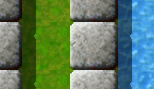
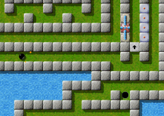

Level des MonatsBeginnend mit dem heutigen Tag, wollen wir jeden Monat einen näheren Blick auf einen herausragenden Level werfen. Herausragende Levels sind dabei solche, die sich durch die höchsten Bewertungen durch die Spieler auszeichnen, und dabei zugleich von genügend vielen Spielern auch bewertet wurden. Es ist also Ihre Wahl. Bitte werten Sie Levels, nachdem Sie sie gespielt haben, und vergessen Sie nicht, die Wertungen zusammen mit Ihren Spielergebnissen zum Ende eines jeden Monats uns zuzusenden. März 2007: „Island Labyrinth“ von Jacob Scott Irgendeine Assoziation mit dieser Kombination? Die meisten Spieler, die bis Pack V vorgedrungen sind, würden ohne zu zögern sagen: Das ist aus „Island Labyrinth“! Und es war ebenso einfach, einige Meinungen zu diesem Level von unseren Spielerkollegen einzusammeln, die Sie unten lesen können - was also macht diesen Level so prominent? Auf der Basis Ihrer Wahlen vom Februar hat Jacob Scotts exzellenter Level eine überwältigend positive Resonanz von drei glatten Zehnern und einer anerkennenden Sieben eingefahren, was sich zu 9.25 mittelt. Kein anderer Level mit mehr als einem Votum konnte mehr Sympathie für sich verbuchen. Damit hat „Island Labyrinth“ in diesem Monat den Sieg davongetragen. „Dieser Level lässt die Realität verblassen“„Island Labyrinth“ ist einer meiner Lieblinge. Er ist wie 20 Level in einem. Nahtlos zusammenhängend und miteinander verknüpft. Der perfekte Mix aus Logik, Fertigkeiten und Timing. Zeit ist nicht so wichtig, wie wieviele Leben man am Ende noch im Inventar hat. Dieser Level lässt die Realität verblassen. Man befindet sich in dieser Welt und Zeit scheint nicht zu existieren. Ich genieße wirklich diese Art von Erfahrung und viele Levels in Enigma und Oxyd bieten mir dieses Gefühl, Island Labyrinth ist eines davon.

Enigma V # 100
Dieser Level kann nicht auf die Schnelle gelöst werden. Die schiere Größe dieses Levels beansprucht ihre Zeit. Aber ein Blick auf die Statistiken dieses Levels eröffnet eine amüsante Situation: Gemäß den Ergebnissen von Februar hält Stupid zur Zeit den Weltrekord für „Island Labyrinth“ mit 37:42. Kopf an Kopf mit ihm hält Ronald die zweitbeste Zeit mit 37:55; nur 13 Sekunden (0.6 Prozent!) hinter Stupid. Ale erreichte das Ziel in 54:00, und Taztunes ist vierter mit einer angemessenen Zeit von 56:53. 13 Sekunden Differenz über 37 Minuten? Ich denke mal, niemand hat bislang diesen Level ohne sonderliche Ambitionen gespielt, einen Weltrekord aufzustellen. Es wäre auch eine Schande, einfach nur durch diesen schönen Level hindurchzueilen. „Island Labyrinth“ ist ein Level mit wirklich schönen Rätseln, eingebettet in ein riesiges Labyrinth. Selbst wenn man Wasser nicht mag, muss man es hier mögen, da es einem hilft, sich in dem Labyrinth zurecht zu finden. Man benötigt einen Überblick, nicht nur um die passenden Oxyds zu finden. Insgesamt ist er ein fairer Level, ohne extreme Anforderungen an die Geschicklichkeit des Spielers zu stellen, und ohne versteckte Objekte, nach denen man suchen muss. Ich erinnere mich, dass ich anfangs mit mindestens drei Teilen des Levels Probleme hatte. Aber jeder Teil kann durch Nachdenken gelöst werden, und durch kleine Experimente mit Objekten, mit denen man noch nicht vertraut ist. Für mich drückt dieser Level den wahren Geist von Enigma aus. Herzlichen Dank und Glückwunsch an Jacob. Ronald empfiehlt auch drei weitere Levels, falls Sie Aufwärmübungen für „Island Labyrinth“ brauchen: „Reach the Dock“ (V/38), „Boulder-Puzzle“ (IV/8) und „Puppet“ (II/42). Sie alle üben einige Fähigkeiten, die sich in „Island Labyrinth“ als nützlich erweisen könnten. Jacob weist außerdem auf „Rush Hour Traffic“ und „Labyrinth of Puzzles“ hin. „Es liegt etwas prächtiges im beruhigenden grünen Gras und blauen Wasser“Dies ist einer meiner absoluten Lieblingslevel in Enigma. Ich mag dieses Gefühl, auf einer großen Reise zu sein. Stück für Stück setzen sich die Teile des Puzzles zusammen, wenn man mit der Murmel diese faszinierende Landschaft erforscht. Aktionen in einem Teil haben Auswirkungen weit davon entfernt (im Gegensatz zu der realen Welt in der wir leben). Dies ist keine Landschaft, die einen konstant in Angst versetzt. Es gibt Gefahren, aber man hat genügend Zeit, sich darauf vorzubereiten und mit ihnen umzugehen. Und es liegt etwas prächtiges im beruhigenden grünen Gras und blauen Wasser. Die Hauptaufgabe liegt darin, die verschiedenen Elemente nicht aus den Augen zu verlieren. Anfangs habe ich mich verwirrt in der Ecke rechts-oben wiedergefunden. Es gibt einige Levels, durch die ich mich, einmal gelöst, nie wieder durchquälen will. Nicht so dieser. Ich hatte jedesmal viel Spaß dabei, „Island Labyrinth“ erneut durchzuspielen. Ich würde gerne mehr dieser epischen Levels sehen. Ich stimme absolut mit Taztunes überein: Einer der einnehmendsten Aspekte dieses Levels ist das durch und durch konsistente Design, das Jacob ihm gegeben hat. Wenn man durch die engen, hellgrauen und begrünten Gassen rollt, gerät nur selten das zweite wichtige Motiv in diesem Level aus dem Ausblickfeld: Wasser. Jacob hat diese Kombination schon früher verwendet, in „Blocks and Water“, aber erst in „Island Labyrinth“ ist sie zur Perfektion gelangt. Dabei drängt sie sich niemals zu sehr in den Vordergrund. Es gibt weitere Design-Elemente, insbesondere die Sandhügel, die sich wunderbar in das Insel-Thema einpassen, daneben die Deathstone/Gradienten-Kombination und das Eis im Süden des Levels, die stärker vom Hauptthema ablenken. „Island Labyrinth“ war der letzte Level, den Jacob für Enigma 0.92 geschrieben hat. In der Tradition von Oxyd war der letzte Level eines Levelpacks ein größerer, verzwickterer und komplizierterer Level als die Vorgänger - und in Enigma 1.00 haben wir dann auch tatsächlich „Island Labyrinth“ als Masterlevel für das Pack V auserkoren. „Er ist […] wahrscheinlich mein schwerster, vernünftig lösbarer Level zur Zeit“Wenn man „Island Labyrinth“ mit Jacobs früheren Levels vergleicht, findet man einen offensichtlichen Vorläufer in Form von „Labyrinth of Puzzles“. Dieser zeigt dieselbe Idee, viele kleine Puzzles zu einem großen Irrgarten zu verbinden und war Jacobs letzter Level für Enigma 0.81. Hier ist Jacobs eigene Sicht von „Island Labyrinth“: Was „Island Labyrinth“ betrifft, habe ich sie im Stil der alten Level 100's von Oxyd designt - eine große Landschaft, die viele verschiedene Elemente und schwierige, aber nicht unmögliche Rätsel enthält. Ursprünglich hatte ich genau das mit „Labyrinth of Puzzles“ versucht, aber das Ergebnis war zu einfach und zu klein (zumindest nach meiner Meinung) und enthielt nicht genügend verschiedene Rätselarten. Für „Island Labyrinth“ habe ich die meisten Puzzle, die gut zum Thema des Levels passten (Blöcke und Wasser, Laser, dichtstehende Blöcke) in einen wesentlich größeren und besser designten Irrgarten eingebaut. Ich habe es auch geschafft, einige eher untypische Puzzle und Features einzubauen, mein liebstes ist dabei der unerwartete (aber keineswegs versteckte) Weg, einen der Oxyds zu öffnen. Das Resultat als Ganzes ist, denke ich, sehr vernünfig geworden - es kann (zumindest von mir) in etwa 24 Minuten gelöst werden, und ist nicht-linear, so dass Spieler nicht immer wieder von vorn beginnen müssen und den ganzen Rest des Levels spielen müssen, wenn er oder sie einen Fehler gegen Ende des Levels macht - der Spieler kann das nächste Mal diesen Teil als erstes lösen. Er ist dennoch nicht so schwer wie einige der alten Level 100 und ist in einem anderen Stil gehalten, aber wahrscheinlich mein schwerster, vernünftig lösbarer Level zur Zeit. Und zumindest was die Bewertungen angeht, scheint er von Enigmas Gemeinde gerne gespielt zu werden, was das wichtigste ist. Viel Erfolg beim Lösen, und viel Spaß! Nun, da bleibt mir nicht mehr übrig, als mit Jacob einzustimmen: Viel Erfolg beim Lösen, und viel Spaß mit diesem wohlverdienten Level des Monats! Oh, und vergessen Sie nicht zu bewerten! Schöne Grüße, Nachtrag: Shoki hat uns ein besonderes Stück Spielerkunst zugesendet, eine komplette Karte von „Island Labyrinth“! Sie finden sie hier, vielen Dank an Shoki dafür! (Vorsicht, die Karte ist natürlich ein Spoiler.) |

{kind=link}